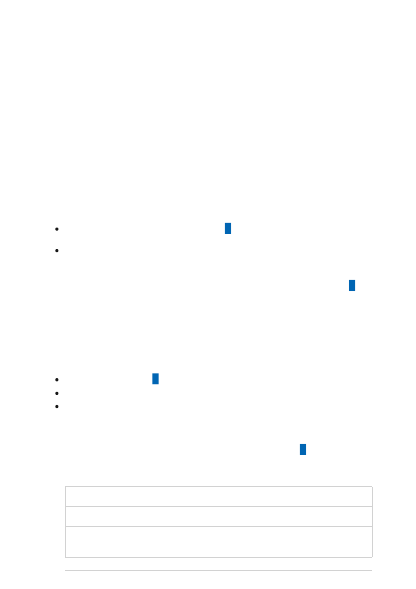

Create a resource and deploy a model
using Azure OpenAI
Article • 03/08/2023 • 5 minutes to read
Use this article to get started with Azure OpenAI with step-by-step instructions to create
a resource and deploy a model. While the steps for resource creation and model
deployment can be completed in a few minutes, the actual deployment process itself
can take more than hour. You can create your resource, start your deployment, and then
check back in on your deployment later rather than actively waiting for the deployment
to complete.
An Azure subscription - Create one for free
Access granted to Azure OpenAI in the desired Azure subscription
Currently, access to this service is granted only by application. You can apply for
access to Azure OpenAI by completing the form at https://aka.ms/oai/access .
Open an issue on this repo to contact us if you have an issue.
Resources in Azure can be created several different ways:
Within the Azure portal
Using the REST APIs, Azure CLI, PowerShell or client libraries
Via ARM templates
This guide walks you through the Azure portal creation experience.
1. Navigate to the create page: Azure OpenAI Service Create Page
2. On the Create page provide the following information:
Field
Description
Subscription Select the Azure subscription used in your OpenAI onboarding application
Resource
group
The Azure resource group that will contain your OpenAI resource. You can
create a new group or add it to a pre-existing group.
Prerequisites
Create a resource